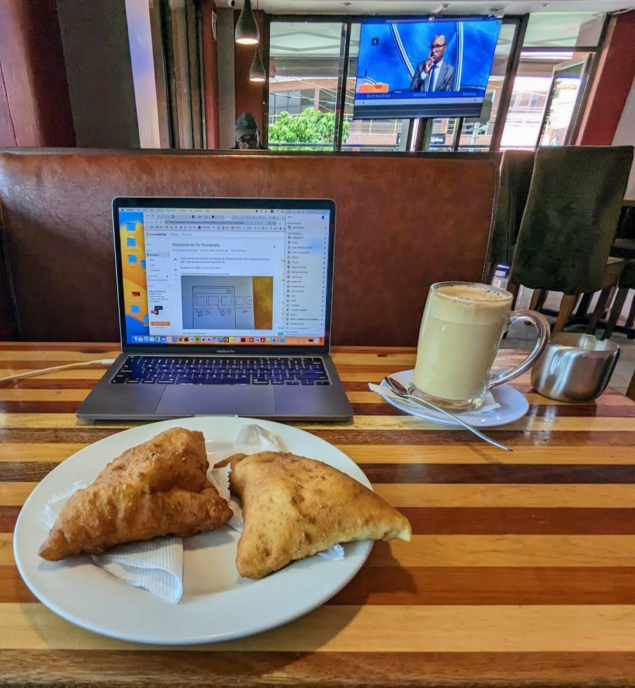
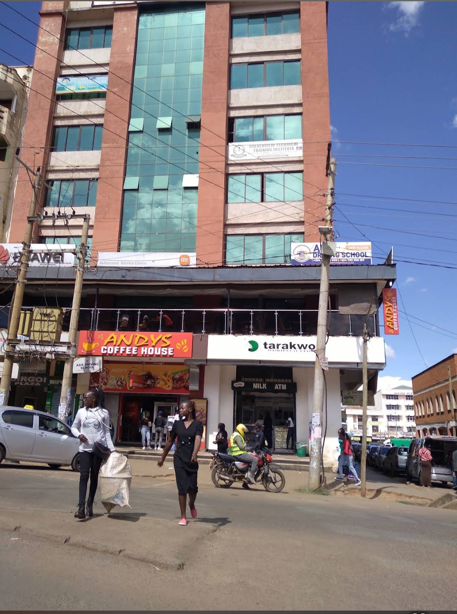

Made properly
Coffee from the machine, food cooked to order, portions that don't leave you hungry. No shortcuts on the plate.
Our story
Andy's started with a simple idea: Eldoret deserved a spot where you could get a proper cup of coffee, a plate of food that actually fills you up, and a comfortable seat to enjoy both — without having to choose between a quiet café and a lively restaurant.
So we built a place that's a bit of everything. Come in for breakfast before work, bring the laptop for a slow afternoon, meet friends for a shake, or pull the whole family in for a Sunday platter. Whatever brings you up the stairs, the welcome is the same — and the menu on the way out always says "Welcome Again."
See what's cooking
What we're about
Coffee from the machine, food cooked to order, portions that don't leave you hungry. No shortcuts on the plate.
Students, workers on lunch, families, the after-match crowd — Andy's is for the whole of Eldoret, and the team knows the regulars by name.
Comfortable booths, free Wi-Fi, a gentle indoor fountain and screens for the game. Somewhere you actually want to stay a while.

Where to find us
You'll find Andy's upstairs at Sirgoi Plaza on Oginga Odinga Street — one of the busiest stretches of Eldoret, a short walk from the matatu stages and the main shops.
Head up and grab a spot on the balcony; it looks straight out over the street, so you get all the buzz of town with a hot cup in hand and none of the noise.
The kettle's on and the game's about to start. Book ahead for the weekend or just walk on up.